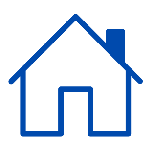
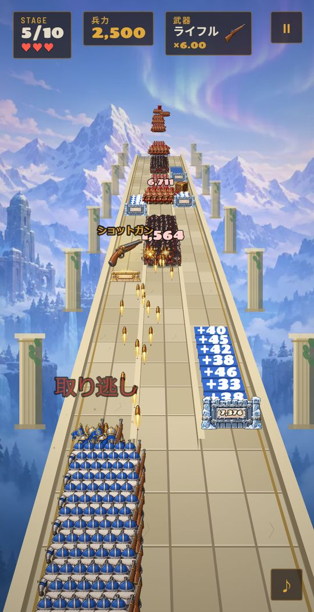
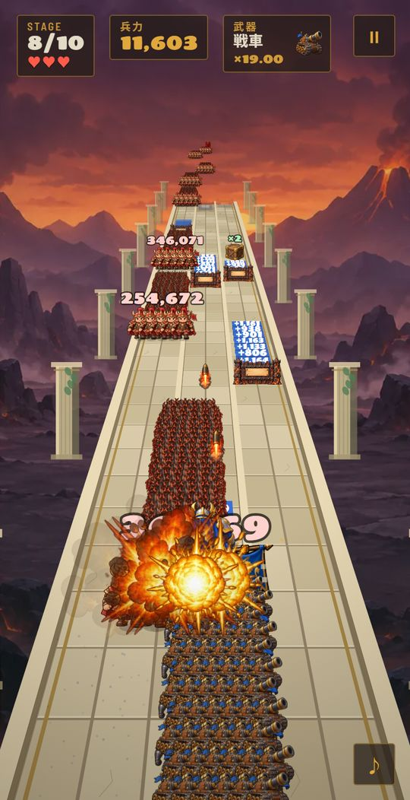
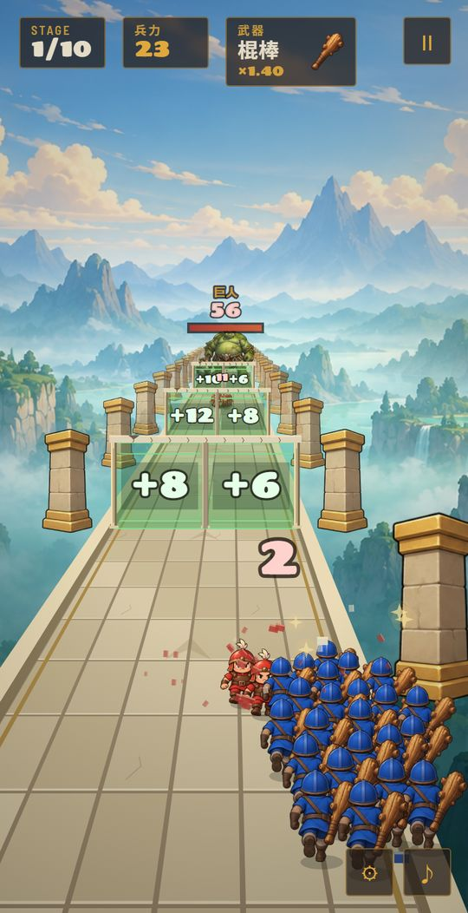
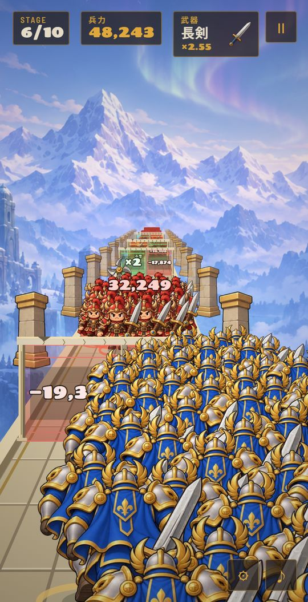
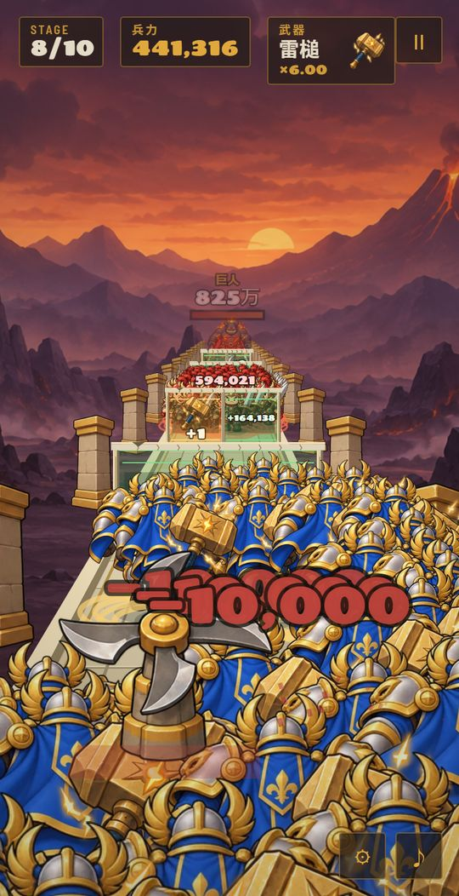
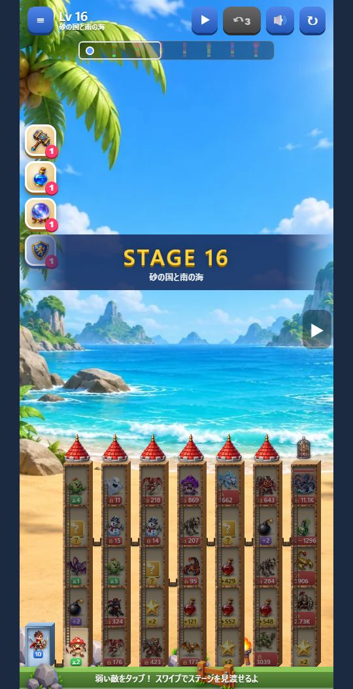
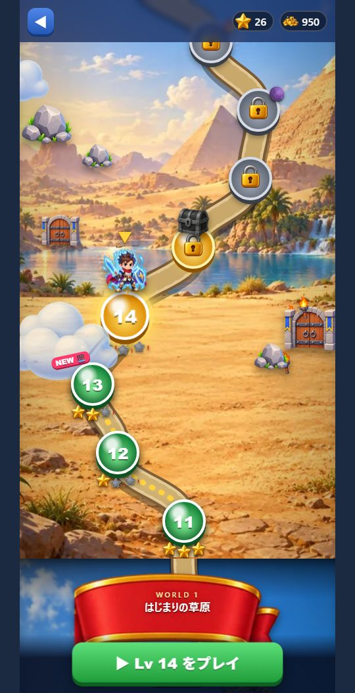
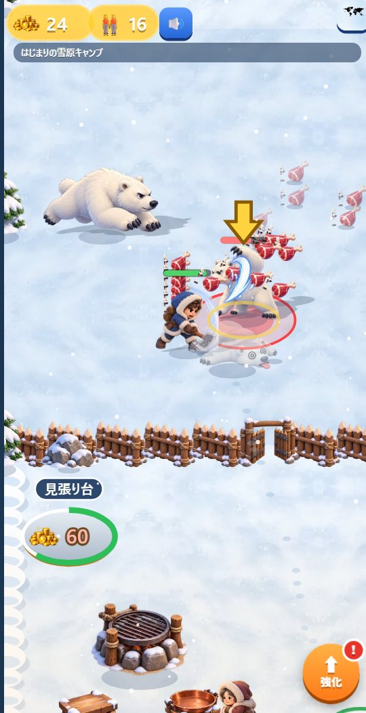
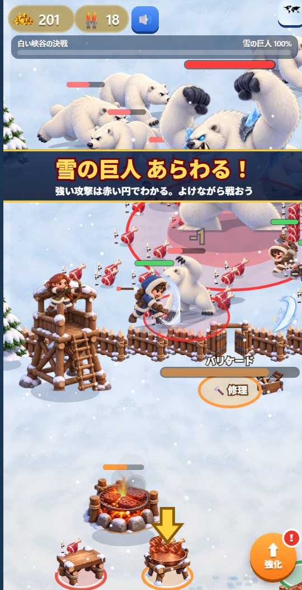

まちのAI屋さんがつくっていますAIゲーム実験室
AIだけで、
どこまでゲームを作れるか。
スマホの広告でよく見る「あのゲーム」を、AIだけで作ってみる実験です。プログラムも、絵も、音も、難しさの調整もAI。人がやったのは、遊んでみて「もっとこうして」と言葉で頼むことだけ。どこまでちゃんと遊べるか、ぜひ試してみてください。
- 迎撃ロード 0人
- Million March 0人
迎撃ロード
🏆 ランキング登録 人動かずに撃ちまくる防衛戦。流れてくる門を撃ち開けて仲間を増やし、武器は投石からロケット砲まで12段階に進化。3本の道を見きわめて、押し寄せる大軍と巨人を食い止めろ！



- 全10ステージ 谷・砂漠・雪・火山・天空と景色が変わる
- 巨人と巨人王 近づく前に削りきれるか
- 結果をシェア 到達ステージを画像にして送れる
無料・登録なし。スマホでそのまま遊べます
AIにこう頼んだら「武器は銃とかマシンガンとか砲丸とか、そういう感じの方がいいんじゃないかな」投石・弓・火縄銃…マシンガン・大砲・ロケット砲まで、12段階の武器が登場
実験のルール
- 01人はコードを書かないプログラムは1行も手で書いていません。
- 02注文は言葉だけ「巨人を出して」「武器を銃にして」など、チャットで頼むだけ。
- 03遊んで、直して、また遊ぶ気になったところを伝えると、AIが直して次の版が届きます。
ほかのゲーム
Million March
🏆 ランキング登録 人ゲートをくぐるたびに兵が増える行進ゲーム。数に上限はなし、100万の大軍も夢じゃない。マップから好きな面を選んで出撃し、巨人との決戦、宝箱のボーナスステージ、移り変わる5つの景色、終わりのない遠征まで。



AIにこう頼んだら「巨人みたいなやつが出てきてほしい」「増減は限界なしでいいかも」巨人と巨人王が出現。兵力はどこまでも増えるように
遊んでみる → Tower Battle ／ 吸収して登るパワータワー
自分より弱い敵をタップして吸収し、パワーを上げていくタワーバトル。橋とはしごでつながった塔を登り、爆弾・毒・？ボックスを見きわめてボスを倒し、檻の中のお姫様を助け出せ。ワールドマップで50面以上、宝物庫や暗闇ステージも。



AIにこう頼んだら「隣の階か、隣の建物の同じ階にしか行けないような縛りをつけたい」橋とはしごでつながった部屋にだけ進めるルールに。爆弾は隣の敵をまとめて吹き飛ばす切り札に
遊んでみる → Idle Arcade ／ 狩って焼いて配るスノーグリル
白クマを倒して肉を集め、グリルで焼いて、凍えた村人に配る。お金で設備を建てるたびにキャンプが広がり、助けた村人が仲間になって一緒に戦う。群れで攻めてくる白クマ、雪の巨人との決戦、5つの村をめぐるストーリーも。



AIにこう頼んだら「白クマがちゃんと危険な存在であってほしい」「白クマよりもっと強い、雪の巨人みたいなのを倒すステージも」攻撃の前に赤い円が出る白クマと、3ステージに1回の雪の巨人との決戦が登場
遊んでみる →AIが担当したこと
スマホで遊ぶのがおすすめです。画面を左右にドラッグして操作します（パソコンなら ← → キー）。
ホーム画面に追加すると、アプリのように全画面で遊べます（iPhone は Safari の共有ボタン →「ホーム画面に追加」）。
遊んだら、感想や「ここが変だった」をぜひ教えてください。それがそのまま次の注文になります。